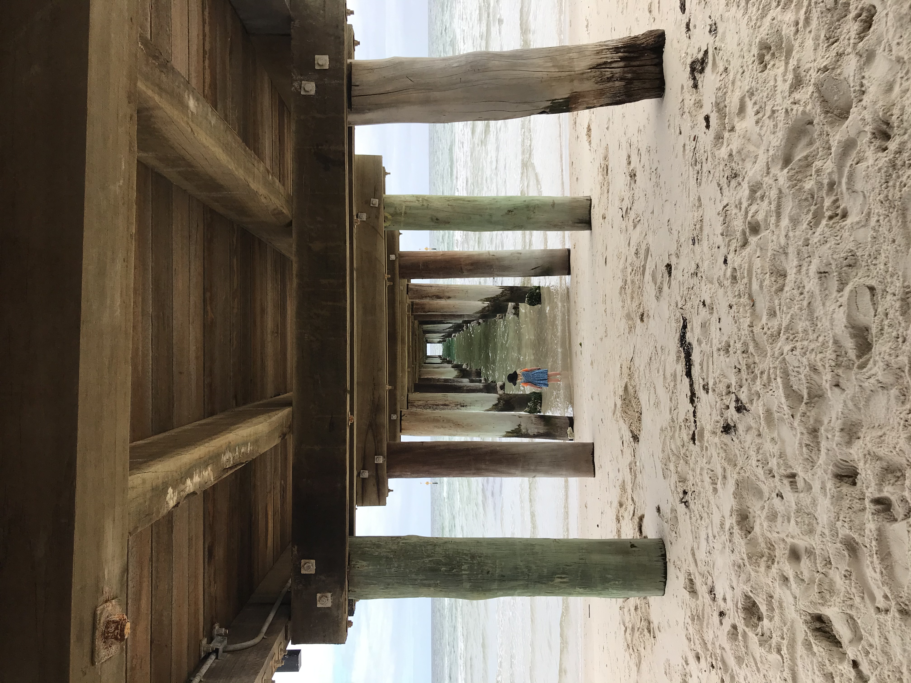
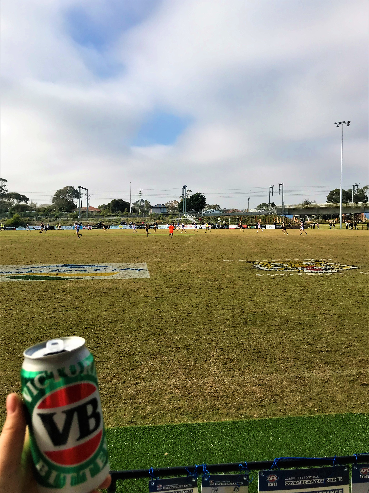
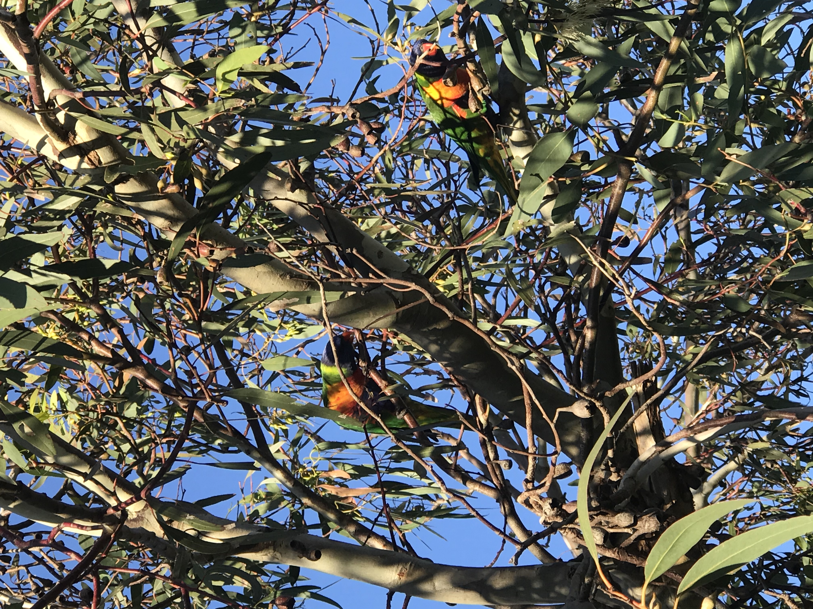
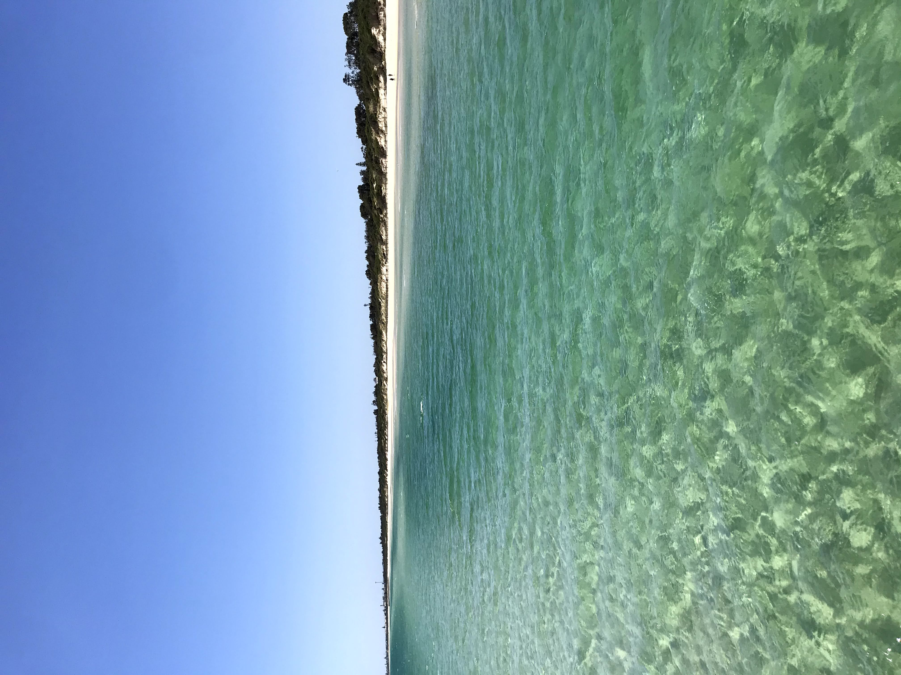
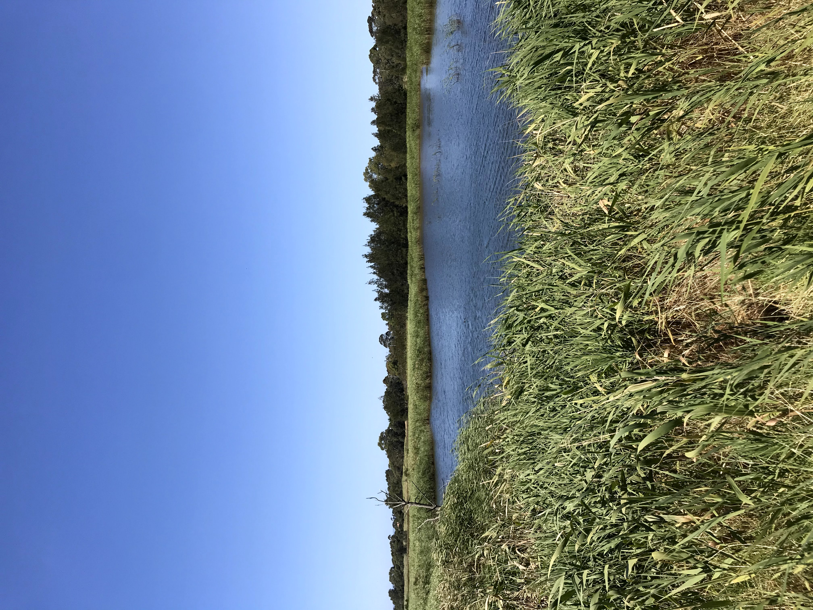
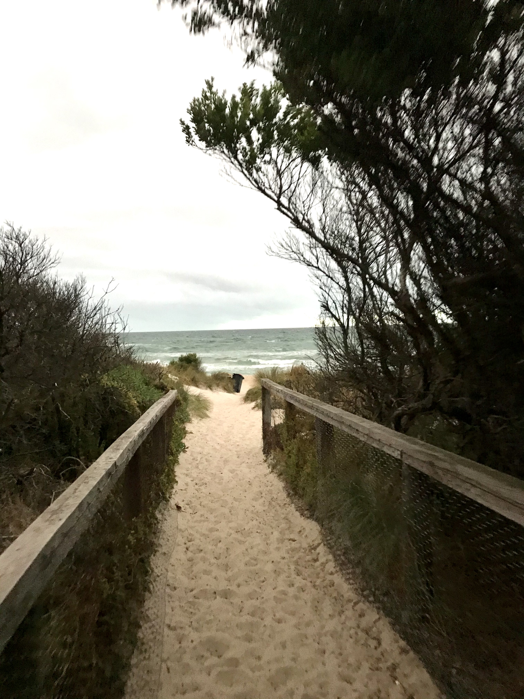
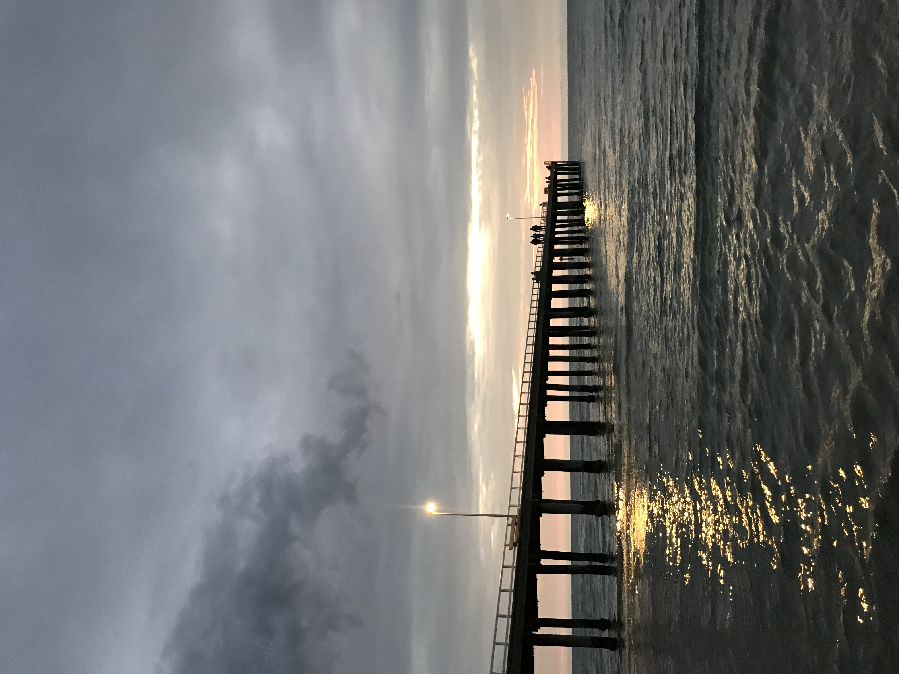

Gallery









Seaford is home to one of Port Phillip Bay's hidden beach gems.
With a beautifully refurbished pier, stretches of white sand and crystal clear waters,
Seaford Beach is a fantastic place to spend the day.
We are located 36 km south-east of Melbourne's CBD in City of Frankston LGA.